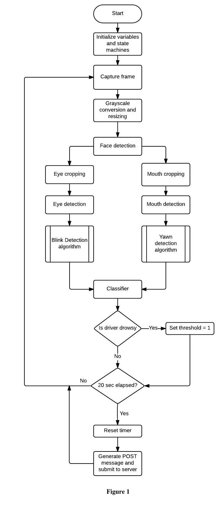

Drowsy Driving is a widespread problem in the United States. It is a known cause of thousands of crashes and fatal accidents every year. Yet, there are few solutions in the market ready to be portable and adaptable to a wide arrang of consumers. This is due to the fact that identifying drowsiness and acting on it is a very challenging task.
Our App presents a novel mobile solution in order to identify drowsiness and keep drowsy drivers awake through hands-free interaction with the driver.
Drowsy Driving Detection Algorithm
Methodology and Results
- Successful blink/yawn detection (subject to proper lighting and forward facing).
- Limitation: Proper lighting and forward facing is need.
- Image Analysis Theory
We proposed a drowsiness detection algorithm by making use of a variety of classification techniques in order to create a more robust and accurate classifier. Some previous work does not solve the problem by identifying drowsiness, but rather by identifying one of the features of drowsiness such as a closed eye. We chose to focus on 3 features and built a classification algorithm based on these features:
- Blink rate (blinks per minute)
- Yawn rate (yawns per minute)
- Blink length (moving average length of previous yawns
In order to calculate these features, we designed an algorithm that will make use of image recognition analysis in order to detect the face, eyes, and mouth in every frame. Afterwards, information from subsequent frames is fed into the algorithm in order to extract the required features.
The flowchart in Figure 1 describes the process to detect drowsiness. The algorithm is attempted with each camera frame, and a different algorithm (discussed later in the section) determines the level of drowsiness. 
Face Detection
The first step of the drowsiness detection algorithm is face detection. Since our approach requires image analysis and recognition in each frame, performance is a necessary attribute. Viola and Jones's algorithm for real-time face detection was deemed appropriate. The algorithm works on the basis of classification based on simple features rather than pixels directly.
In order to decrease the time to process the image, a cascade of weak classifiers is built. Each weak classifier is not able to individually classify the image, but the combination of classifiers is able to discern the correct object.
The implementation of this classifier was used by means of the Python OpenCV 2.4 library, which is optimized to work as a wrapper for the OpenCV C++ functions, and thus provides a performance similar in its bare-bones Python library as in the C++ implementation. We decided to use the Python version for simplicity of code and development speed.
Eye Detection
The implementation of this classifier was used by means of the Python OpenCV 2.4 library
The eye detection algorithm uses a very similar approach to the cascade-based classification that identifies a face. Nevertheless, an eye is harder to recognize and thus easier to miss-classify. As a result, the bounding window on which the eye was searched for was significantly decreased in an effort to achieve higher accuracy and performance.
For an identified face starting at coordinates (x,y) and with a width of $w$ and a height of h, the face image can be represented as the following:
- face = Image[y:y+h,x:x+w]
Where Image is the captured frame with a camera. The bounding box for the eye is as following:
- eye = Image[(y+h/5):(y+h/2),x:(x+w)]
Additionally, it should be noted that the cascade classifier can and will find one or two eyes depending on the lighting conditions, camera positioning, and other factors. Since blinking mostly occurs with both eyes simultaneously, we considered only the cases when we 1) detected open eyes and 2) did not detect eyes
Eye Blink Detection
The algorithm proposed to detect the blink rate and blink length is an implementation of a finite state machine which feeds its result to a historic data array, a portion of which is then analyzed and sent to the back-end storage. A discussion of the finite state machine follows:
The Finite state machine can be seen in Figure 2. Its operation spans a minimum of 3 frames, 2 to detect a blink and 3 to also detect the length of the blink. Using the Python time library allows reliable measurement of blink length without the need to account for different fps performance in the algorithm. After a blink is detected and its time and length calculated, that information is saved in two separate arrays. The array containing information about the start time of a blink is used to determine blink ratio (blinks per minute) whereas the blink length array is used to determine the average blink length. The features used in the classification algorithm are as follows:
- Blink start time ==> Append to array of blink start times [b_0, b_1, b_2...]
- Blink length ==> Append to array of blink lengths [l_0,l_1,l_2,...]
Yawn Detection:
The Yawn detection algorithm is very similar as the blink detection algorithm. The mouth detection proved to be less robust and more prone to misses, and thus we decided to have a threshold of minimum 5 continuous non-mouth frames to determine that a yawn was executed. Other considerations were taken into account to determine a yawn since there were many false positives while testing. False positives were triggered for anything from a person looking away, talking loudly, or placing a hand in front of the mouth. Further work on yawn detection could provide a more reliable drowsiness detection algorithm.
- Implementation of Detector => Cloud => Android App
- Data is being constantly updated, every 20 seconds. In addition, requests from the Android App are generated at a period shorter than 5 seconds.
- The Cloud hosting and computation environment used is Cloud 9. This system allows us to set up a LAMP stack and manage a vm as a local machine.
In order to determine whether the driver is sleepy or not, we collected samples from 20 individuals. To establish ground truth, we used a small questionnaire previous to the study and in addition, considered the time of day.
A classifier was trained using approximately 150 negative data points and 100 positive data points from these 20 individuals. The machine-learning tool Weka allows to compare multiple classification algorithms with the given data without having to code the algorithms.
Blink Rate Histogram (red=sleepy)
Yawn Rate Histogram (red=sleepy)

The algorithm we developed was fast enough to work seamlessly on any relatively new desktop or laptop computer. Nevertheless, when we tried using the Raspberry Pi, we initially got a performance of 2-3 fps. After implementing optimizations mentioned in the research paper, we achieved a sampling ratio of 5 fps.
Here, a new problem comes up. As stated in the Drowsiness Detection section, we need 3 frames in order to correctly measure a blink. 3 frames at 5fps = 0.6 seconds. An average human blink takes between 0.1 and 0.4 seconds. Thus, the current design is not a feasible design for the Raspberry Pi. Further optimizations and using the new Raspberry Pi 3 could fix this issue.
Drowsy Driving

Display Data
Alert Driver
Open Google Maps
How does this work?
- Mounted camera records the image of driver while driving.
- Raspberry Pi does image analysis and determines driver's level of drowsiness
- Raspberry Pi uploads information to a cloud database
- Android App pulls data from database.
- App interacts with the driver when drowsiness is detected and attempts to provide a solution
Android Application
Display Data

Alert Driver

Redirect to Google Map
What factors did we look at?


How do you like the app?
Who are we?

Bruno Peynetti

Michael Nowakowski

Baiyu Yang
Yannan Xu
NOTE
PROJECT FOR EECS 395/495: Wireless and Mobile Health
Drowsy Driving is an Android mobile phone App devoted to detecting driver's drowsiness and keep driver awake.
Recognizing drowsy driving through yawn and blink detection in a car-mounted webcam system powered by a Raspberry Pi.
Many thanks to Shantnu Tiwari for this starter code: https://github.com/shantnu/FaceDetect and a great tutorial: https://realpython.com/blog/python/face-recognition-with-python/